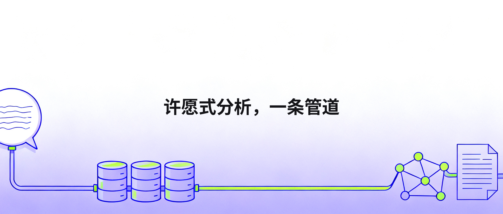
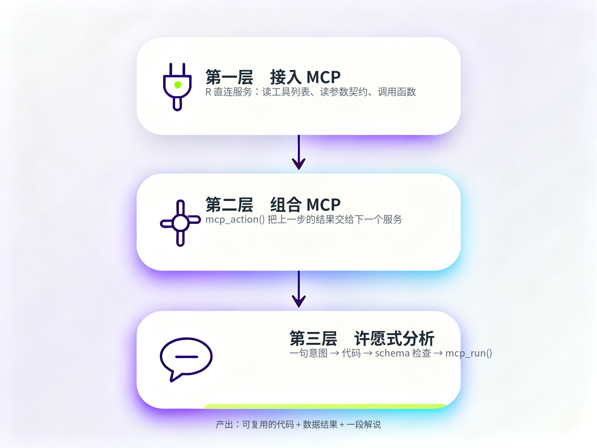
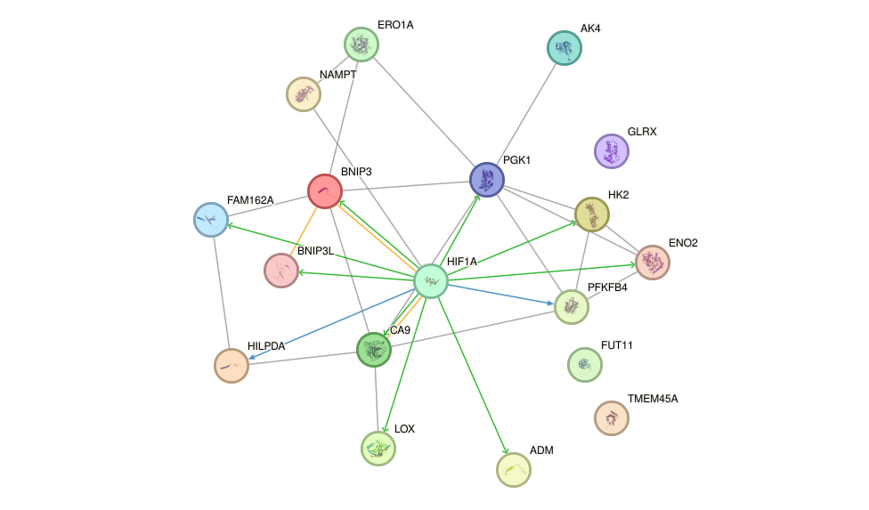

[!一句话版本：生物数据库开始提供 MCP 端点，那是给 agent 用的。我把它们接回 R，变成三种能力：直连服务、把多个服务串成管道、用一句话生成整条分析程序。这套东西我管它叫许愿式分析。]

从一个问题开始
假设你在研究 HIF1A，一个管缺氧应答的转录因子。
你想知道三件事。敲低它之后，哪些基因跟着变？这些基因在蛋白层面是不是一个模块？在人体组织里，它们是不是同步表达？
三个问题，三个数据库：GPSAdb、STRING、GTBAdb。
过去要分别打开三个网站，查、下载，再回 R 里拼。会写脚本的人可以调各自的 API，但三个服务的请求格式并不一样：一个要 JSON 数组，一个要回车分隔的字符串，一个要你先查一遍合法的标识符。
这两年开始有 MCP 接口。MCP 是给 agent 的：模型读工具说明、选工具、填参数。对习惯在 R 里工作的人，它还有另一种用法。
aisdk.mcp 把远端工具接进 R，gpsadb 把 GPSAdb 的 12 个工具包成函数。一层一层往上，是三种能力。

最上面那层，我叫它许愿式分析：用一句自然语言说清研究意图，模型把它写成一段可审查、可修改、可重复执行的 R 代码。
它不替你证明机制，只帮你把验证机制所需的证据组织起来。
第一层：接入 MCP
gpsadb 干的活就是这个翻译：协议那层交给 aisdk.mcp（一次 POST、结构化输出、错误和契约），数据这层交给你熟悉的函数。
library(gpsadb)
gpsadb_info()$datasets
#> [1] 7665
gpsadb_de("D22946", genes = c("HIF1A", "PGK1", "CA9", "BNIP3", "SLC2A1", "LDHA"))
#> gene log2fc padj
#> 1 HIF1A -4.28 8.5e-57
#> 2 PGK1 -2.17 2.1e-46
#> 3 CA9 -4.12 6.1e-73
#> 4 BNIP3 -3.43 1.4e-96
#> 5 SLC2A1 -1.20 4.1e-16
#> 6 LDHA -0.71 1.2e- 7D22946 是 siRNA 敲低 HIF1A 的 HeLa 数据集。HIF1A 掉了 4.28 个 log2，它管的糖酵解基因跟着塌：CA9、BNIP3、PGK1 全在 −2 以下。
这就是确定性函数的样子：参数写死，结果可复现，不用跟模型商量。
我常用的是 gpsadb_de()、gpsadb_query_gene() 这几个。用了一阵子之后都记得住，但第一次用的人记不住。
第二层：组合 MCP
一个库只回答一个问题。GPSAdb 回答”扰动之后谁变了”，这只是一个层面。
要知道这是不是一个真的调控关系，还需要另外两层：这些基因在蛋白层面连成什么结构，以及它们在人体样本里是不是同步变化。
于是有了 mcp_action()：把”某个客户端上的某个工具”绑成一个值优先的函数，前一步的输出直接变成后一步的输入。
gt <- create_mcp_http_client_for("gtbadb")
string <- create_mcp_http_client_for("string")
# 第 1 跳：GPSAdb，敲低 HIF1A 后按显著性取前 20 个响应基因
ds <- gpsadb_search_datasets(perturbed_gene = "HIF1A", method = "knockdown", limit = 5)$dataset_id[1]
deg <- gpsadb_de(ds, limit = 200)
deg <- deg[!is.na(deg$log2fc), ]
top <- head(deg[order(deg$padj), ], 20) # 这 20 个基因就是下一步的输入
# 第 2 跳：STRING，这 20 个基因连成什么结构，枢纽是谁
ppis <- mcp_action(string, "string_interactions_query_set", into = "proteins",
fixed = list(species = "9606"))
net <- top$gene |> ppis() # 109 条边
hub <- table(unlist(lapply(net$network, function(e)
vapply(e$proteins, function(x) x$preferred_name, "")))) |>
sort(decreasing = TRUE) |> names()
hub <- setdiff(hub, "HIF1A")[1] # PGK1，16 条边
# 第 3 跳：GTBAdb，枢纽和 HIF1A 在人体样本里同步吗
cor_two <- mcp_action(gt, "correlate_two", into = "feature1",
fixed = list(category1 = "gene", category2 = "gene",
feature2 = hub, datasource = "gtex",
method = "pearson"))
"HIF1A" |> cor_two()三跳走完，每一步的数字：
| 跳 | 服务 | 输入 → 输出 | 结果 |
|---|---|---|---|
| 1 | GPSAdb | 基因名 → 20 个响应基因 | HIF1A −4.28，BNIP3 −3.43（padj 1e-96） |
| 2 | STRING | 20 个基因 → 一张网 + 枢纽 | 109 条边，密度 0.71，枢纽 PGK1（16 条） |
| 3 | GTBAdb | 枢纽 → 共表达 | 正常组织 r≈0.77，肿瘤 ≈0.56，细胞系 ≈0.32；70 个显著子类型全为正 |

我把第 2 跳 STRING 的图直接贴回来：20 个基因连成 109 条边，密度 0.71，不是一盘散沙。
HIF1A 在中间，箭头从它出发指向 CA9、BNIP3、PGK1、LDHA 这些靶基因。箭头是调控方向，不是”抱在一起”。
细看边的类型也是这样：109 条边里只有 6 条物理互作，13 条是调控关系，其余是功能关联。我拿 NFKB1 和 NFKBIA 做对照，那一对的 physical 是 0.999，两个蛋白真的贴在一起。
三跳读下来，机制自己就浮出来了：
- 扰动把这条调控打掉，20 个靶基因整条塌下去（HIF1A −4.28，BNIP3 −3.43）；
- 它们不是各自变化，而是连成一个 109 条边的模块，枢纽是 PGK1；
- 枢纽与 HIF1A 在正常组织里 r≈0.77，70 个显著子类型没有一个是负的。
因果、关联、物理，三个证据指向同一个结构。 单看任何一层都不够：只看差异表达你不知道它们是不是一个整体，只看共表达你不知道方向，只看 STRING 你不知道这个模块在这个细胞里有没有被打掉。
组织梯度也在讲事：GTEx 0.77 > TCGA 0.56 > CCLE 0.32。一个常见解释是细胞系养在常氧（约 21% O2）里，缺氧程序本来就没被充分激活。
第三层：许愿式分析
第一层和第二层都有一个前提：你得记得住函数名和参数。
所以还有第三个入口：把意图写成一句话，让它变成代码。
q <- gpsadb_intent("HIF1A 敲低之后，缺氧通路的靶基因变成了什么样？")
cat(q)它返回的是代码：
hif1a <- gpsadb_search_datasets(perturbed_gene = "HIF1A", method = "knockdown", limit = 50)
ds_id <- hif1a$dataset_id[1]
hypoxia_sets <- gpsadb_search_gene_sets(query = "hypoxia", library = "Hallmarks", limit = 20)
hyp_term <- hypoxia_sets$term[1]
hyp_gsea <- gpsadb_gsea(ds_id, library = "Hallmarks", terms = hyp_term,
include_core_genes = TRUE)
hyp_gsea[, c("term", "nes", "padj")]我拿到这段代码时先看了两件事。
它没有执行。 函数只返回文本，跑不跑、怎么跑，在你手里。
代码是它写的，检查是你的事。MCP 的声明不够全的时候，它会写错，跑之前看一眼。
#> term nes padj
#> 1 HALLMARK_HYPOXIA -2.44 0.0000000025NES 是 −2.44，缺氧通路整条被压下去。这个数字和上面那张差异表达表是同一件事的两种说法。
意图入口省的是记忆，不是判断。 代码回到你手上，判断还在你这边。
库多了以后，一句话可以跨三个库。
三个客户端都建好了，工具一共 40 个。这时候连 mcp_action 都不用记。
gps <- gpsadb_client()
code <- mcp_intent(
"查 HIF1A 敲低后 PGK1 的变化，再看它们在 GTEx 正常组织里的共表达，最后查 STRING 里这一对的互作分数",
clients = list(gps = gps, gt = gt, string = string)
)它写出来的代码长这样（节选）：
hif1a_ds <- gpsadb_search_datasets(perturbed_gene = "HIF1A", method = "knockdown", limit = 50)
ds_id <- gpsadb_data(hif1a_ds)$dataset_id[1]
pgk1_de <- gpsadb_de(ds_id, genes = c("PGK1"))
gtex_subtypes <- mcp_action(gt, "list_subtypes", into = "datasource")("gtex")
corr <- mcp_action(gt, "correlate_two", into = "feature1",
fixed = list(feature2 = "PGK1", datasource = "gtex",
category1 = "gene", category2 = "gene",
method = "pearson"))
hif1a_pgk1_cor <- "HIF1A" |> corr()
ppi <- mcp_action(string, "string_interactions_query_set", into = "proteins",
fixed = list(species = "9606"))
hif1a_pgk1_ppi <- "HIF1A\rPGK1" |> ppi()
list(
hif1a_knockdown_datasets = hif1a_ds,
pgk1_expression_change = pgk1_de,
gtex_hif1a_pgk1_correlation = hif1a_pgk1_cor,
string_hif1a_pgk1_interaction = hif1a_pgk1_ppi
)这一版直接能跑。31 个 GTEx 正常组织子类型，中位 r≈0.77；STRING 那边一条边，和前两节一致。
跑和读也是分开的两步：
results <- mcp_run(code, clients) # 在独立环境里跑，返回代码结尾那个命名列表
mcp_explain(results) # 问题跟着结果走，不用再写一遍mcp_intent() 把当时那句意图挂在代码上，mcp_run() 原样带到结果上，mcp_explain() 自己取。整条链里，问题只写一次。
这就是和 agent 对话的区别：agent 给你一段回答，mcp_intent() 给你一份能改、能重跑、能进仓库的代码。
三个服务合并给 agent 时，我加了一件必须做的事：前缀。GPSAdb 和 GTBAdb 都有 get_database_info，不分开就会互相盖掉：
gpsadb__get_database_info
gtbadb__get_database_info
combine_mcp_tools() 会自动处理，40 个工具一个不少。
合成一段解说
三层结果放在一起，人可以自己读。也可以让它写一段。
mcp_explain(
list(perturbation = deg, coexpression = coexpr, ppi = net),
question = "HIF1A 敲低之后，这个缺氧模块说明了什么？"
)返回三段话（真实输出，只删了重复的）：
在 HIF1A 敲低后，该模块中的五个基因全部显著下调：HIF1A（log2fc −4.28，padj 8.46e-57）、PGK1（−2.17，2.13e-46）、CA9（−4.12，6.07e-73）、BNIP3（−3.43，1.44e-96）和 SLC2A1（−1.20，4.08e-16）。这组结果一致表明，该模块的表达依赖 HIF1A。
共表达结果方向一致但强度不一：三个数据源的中位相关系数均为正（gtex 0.767，tcga_tumor 0.556，ccle 0.320），显著正相关基因数分别为 29/31、33/33 和 8/22，显著负相关均为 0。CCLE 中位相关最低、显著正相关比例也最低，说明该模块的共表达紧密程度在不同数据源间并不一致。
PPI 网络包含 18 个节点、109 条高于阈值的边，密度 0.712，其中物理边 6 条、调控边 13 条，hub 为 PGK1。因此，模块内部的连接中心是 PGK1，而不是 HIF1A；材料未提供 HIF1A 在该网络中的连接数或角色，不能据此推断其网络地位。
如果这批结果来自 mcp_run()，问题已经跟着传过来了，mcp_explain(results) 一行就够。我读它只做一件事：对数字。0.767、109、6 条物理边，每一个都能在上一层的结果里找到。找不到的，就不该信。
它也只看得见你递进去的东西。这次我没把 HIF1A 的度数（17）放进材料，它就老实说”材料未提供”，没有编。
还能接什么
内置表里不止这三个，list_mcp_http_servers() 能直接列出来：
| db | 是什么 | 维护 |
|---|---|---|
gpsadb | 扰动转录组 | GPSAdb |
gtbadb | TCGA、GTEx、CCLE 的共表达 | GTBAdb |
string | 蛋白互作网络 | STRING |
gwas | GWAS Catalog：性状、研究、变异关联 | EMBL-EBI |
ols | 生物医学本体 | EMBL-EBI |
interpro | 蛋白家族与结构域 | EMBL-EBI |
gwas <- create_mcp_http_client_for("gwas")
vapply(gwas$list_tools(), function(t) t$name, "")
#> "gwascatalog_get_traits" "gwascatalog_get_studies" "gwascatalog_get_associations"我看 GWAS，是因为它补的是第四种证据：人群遗传学。前面三层问的是”这个细胞里发生了什么”，GWAS 问的是”人的变异有没有在这个基因上被关联过”。
gwas$call_tool_data("gwascatalog_get_associations",
list(mapped_gene = "NFKB1", size = 1))$pagination$total_results
#> [1] 137NFKB1 有 137 条关联，HIF1A 10 条，PGK1 4 条。数量不是结论，但它决定了这个基因在人群遗传学里有没有东西可看。
create_mcp_http_client_for() 在握手之后还会核对工具名。端点被换掉、或者被挪去干别的，这里就报 mcp_endpoint_changed_error，不会把错的数据当成对的用。
再往外的服务我用 create_mcp_client() 走 stdio 接本地，机制的其余部分不变。
装起来
remotes::install_github("YuLab-SMU/aisdk.mcp") # 传输层 + mcp_action / mcp_intent
remotes::install_github("YuLab-SMU/gpsadb") # GPSAdb 的确定性函数aisdk.mcp 要装 GitHub 版，CRAN 上还没有。
数据本身请引用 GPSAdb 的文章：Guo S. et al. (2026) GPSAdb 2.0, Nucleic Acids Research 54(D1):D1082–D1086。数据是 CC BY 4.0。
我写错的、你跑不通的，到 GitHub 提 issue 比在后台留言有效。